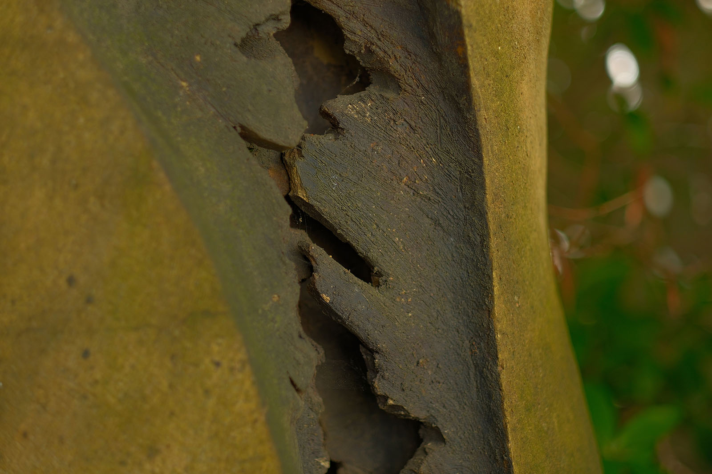
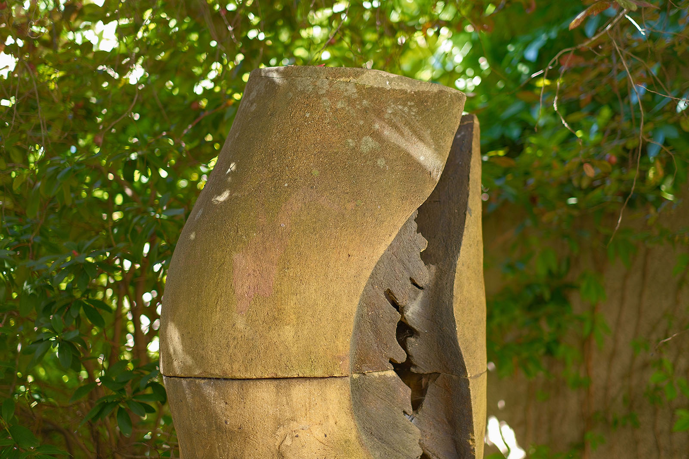
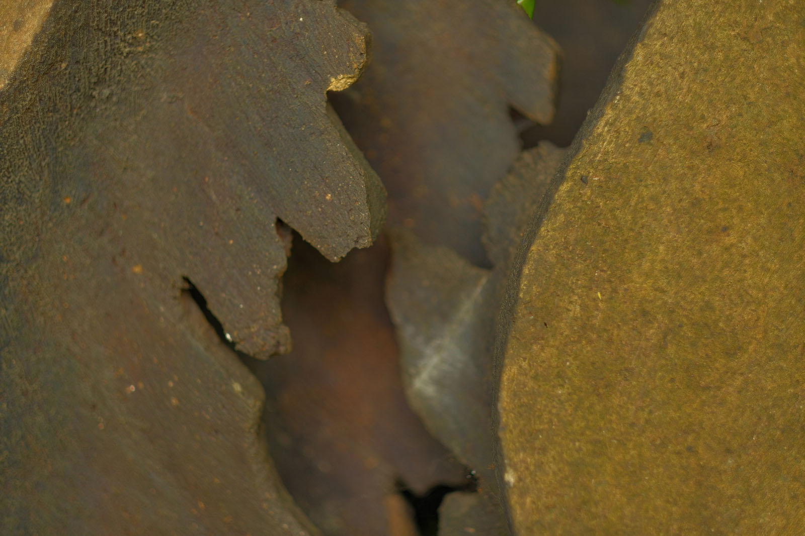
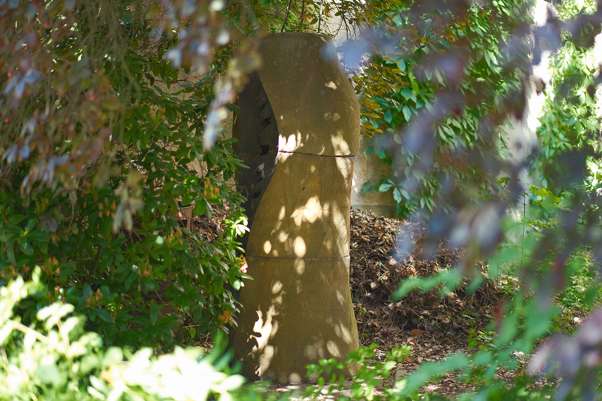

Recherche und Werkbeschreibung: Roman Pilz. Text und Fotografien wechseln sich wie in einem Magazin ab. Ein Klick auf ein Bild öffnet die Großansicht.
Die symbolhaften Keramiken des zur Entstehungszeit um 1980 in Gerinswalde, zwischen Schloss Colditz und Burg Kriebstein, ansässigen Formgestalters Volker Döring erinnern entfernt an natürliche biologische Formen.
Die dekorative Aufbaukeramik besteht aus zwei Teilen: einem niedrigen knospenförmigen Körper und einer hoch aufragenden, geschwungenen Säule. Beide Körper sind wiederum aus mehreren Segmenten zusammengefügt. Die beiden organisch gerundeten Formen des graubraun gebrannten Steinzeugs spalten und öffnen sich und zeigen in ihrem Inneren dunkel pigmentierte Wucherungen.
Volker Döring wurde 1945 in Geringswalde geboren. Döring absolvierte zunächst eine Lehre als Kerameinrichter in Colditz. Anschließend studierte er von 1964 – 1967 Keramik an der Fachschule für angewandte Kunst Heiligendamm.
Von 1970 bis 1975 machte er ein Studium als Diplom-Formgestalter für Keramik und Gefäßgestaltung an der Hochschule für industrielle Formgestaltung Halle (Burg Giebichenstein). Nach der Ausbildung arbeitet der Künstler zunächst freiberuflich in Geringswalde. Kurz nach der deutschen Wiedervereinigung zieht er in die Nähe von Karlsruhe, unterhält aber weiter ein Atelier im bei Geringswalde gelegenen Beerwalde (Erlau).
In Chemnitz schuf er neben einer Keramik für den Außenbereich des Schauspielhauses, auch ein keramisches Wandbild für die Gießerei „Rudolf Harlaß“ in Wittgensdorf. Volker Döring ist Mitglied im Chemnitzer Künstlerbund. Er arbeitet als Keramiker und Bühnenbildner.
Ein geteiltes Leben
„Dekorative Keramik“ (1980) von Volker Döring im Hof hinter dem Schauspielhaus, Park der Opfer des Faschismus
Die geschwungene Säule scheint von den rötlichbraunen, schroff und unregelmäßig gebrochenen Stegen vertikal auseinandergeschoben zu werden – sie erinnern an Kristalle in einem Hohlraum oder Zotten an den Innenwänden des Verdauungssystems. Die kleinere knollenartige Form bricht oben auf und präsentiert sechs gewundene und raukantige Blätter, die wie Schieferplatten auseinandergehen.
Der Künstler thematisiert auf abstrakte Weise die befruchtende Wirkung von Gegensatzpaaren, wie Innen-Außen, Hell-Dunkel oder, in freierer assoziativer Weise, Männlich und Weiblich. Zudem verweist die konkrete Gestaltung auf schöpferische Prozesse, wie Wachstum und Veränderung, die sich von der Natur auch auf die Kunst übertragen lassen.

Die ursprünglich im Zentrum des Hofgartens zwischen Schauspielhaus und Altenheim aufgestellte Figurengruppe wurde nach dem Erweiterungsbau des Theaterclubs von 2002 in eine Nische platziert. Das kleine Teil fehlt aktuell.
Volker Döring wurde 1945 in Geringswalde geboren. Döring absolvierte zunächst eine Lehre als Kerameinrichter in Colditz. Anschließend studierte er von 1964 – 1967 Keramik an der Fachschule für angewandte Kunst Heiligendamm.

Von 1970 bis 1975 machte er ein Studium als Diplom-Formgestalter für Keramik und Gefäßgestaltung an der Hochschule für industrielle Formgestaltung Halle (Burg Giebichenstein). Nach der Ausbildung arbeitet der Künstler zunächst freiberuflich in Geringswalde. Kurz nach der deutschen Wiedervereinigung zieht er in die Nähe von Karlsruhe, unterhält aber weiter ein Atelier im bei Geringswalde gelegenen Beerwalde (Erlau).
In Chemnitz schuf er neben einer Keramik für den Außenbereich des Schauspielhauses, auch ein keramisches Wandbild für die Gießerei „Rudolf Harlaß“ in Wittgensdorf. Volker Döring ist Mitglied im Chemnitzer Künstlerbund. Er arbeitet als Keramiker und Bühnenbildner.

Ein geteiltes Leben
„Dekorative Keramik“ (1980) von Volker Döring im Hof hinter dem Schauspielhaus, Park der Opfer des Faschismus
